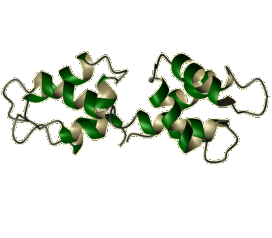

Biological Magnetic Resonance Data BankA Repository for Data from NMR Spectroscopy on Proteins, Peptides, Nucleic Acids, and other Biomolecules |
| 
|
||||||
Visualization options: Single-entry, Two-entry, Restraints by PDB ID, Chem shift histograms, Visualization server
|
||||||